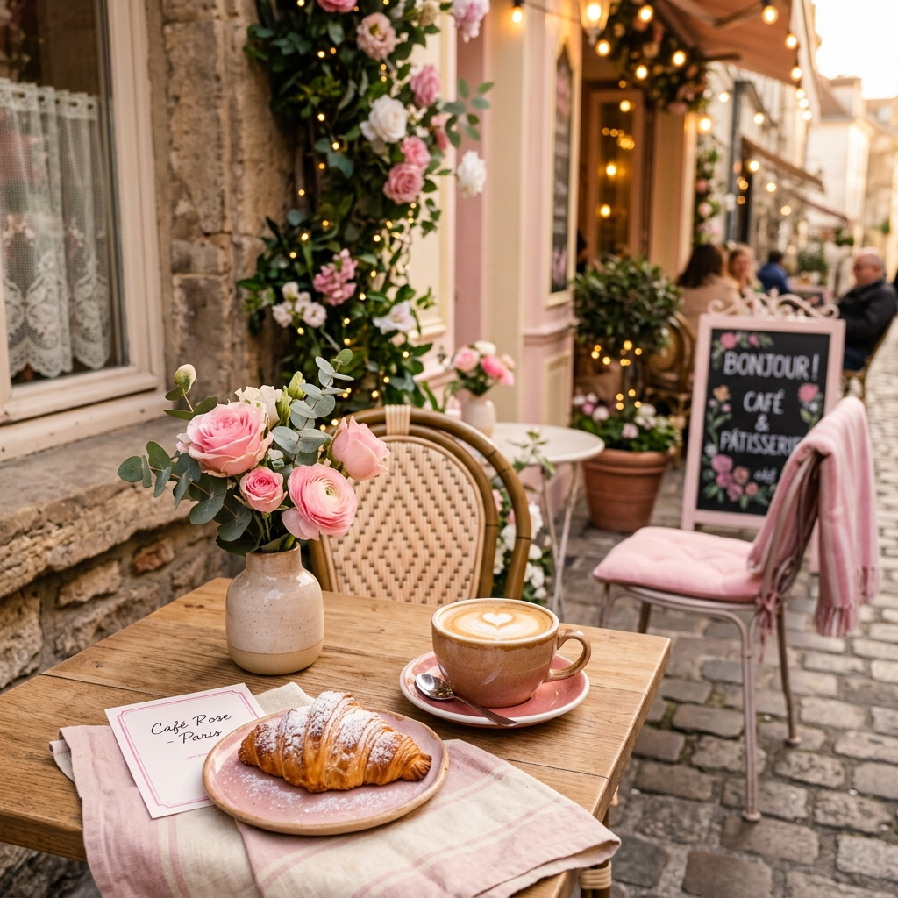

Guía Para Aprender Idiomas Rápido

Conecta mejor con los locales aprendiendo frases clave antes de tu viaje.
Saber algunas palabras en el idioma local puede abrirte muchas puertas. Un simple "gracias" o "buenos días" demuestra respeto y genera sonrisas inmediatas.
Descarga aplicaciones como Duolingo, escucha música en el idioma destino y no tengas miedo de cometer errores. ¡La práctica hace al maestro!
← Volver al inicio